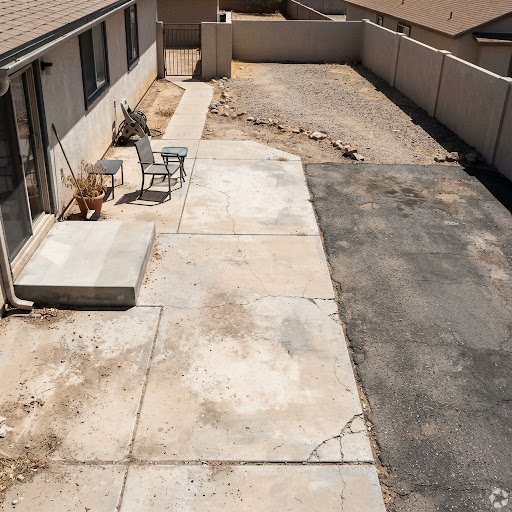
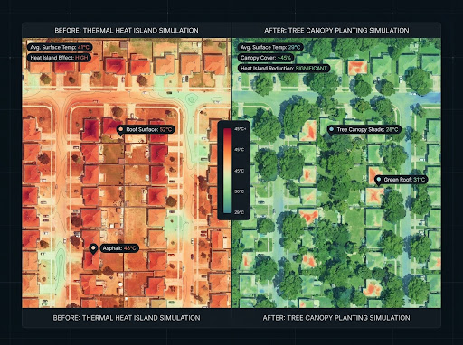

Komunitas Warga Teduh
Dokumentasi nyata aksi warga Denpasar mengubah pekarangan semen panas menjadi koridor rindang berakar aman fondasi.

Penanaman Pohon Tanjung di Pelataran Ruko Teuku Umar
 Made Suantara • Teuku Umar
Made Suantara • Teuku Umar

Hijaukan Gang Padat Sesetan dengan Ketapang Kencana
 Ayu Lestari • Sesetan
Ayu Lestari • Sesetan

Meredam Terik Sore Rumah Barat dengan Tabebuia
.webp) Ketut Wiradana • Renon
Ketut Wiradana • Renon